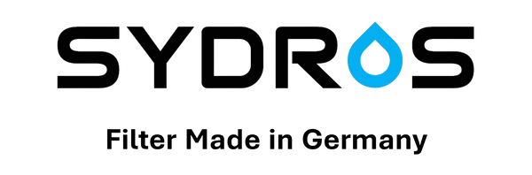

Reverse Osmosis
SYDROS
Deutscher Anbieter von Umkehrosmose- und Wasserfiltersystemen für Haushalt und Büro.
Produkte in der Datenbank

SYDROS
RO 600 VITA
—
Technologie: Reverse OsmosisInstallation: Under-counter / countertopFilterstufen: 5